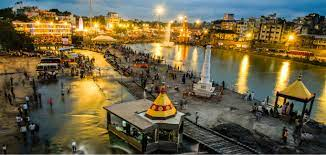

HTML Page About Nashik
LandMarks In Nashik
Mountains
Forts
Rivers
Nashik District is located between 18.33 degree and 20.53 degree North latitude and between 73.16 degree and 75.16 degree East Longitude at Northwest part of the Maharashtra state, at 565 meters above mean sea level. The District has great mythological background. Lord Rama lived in Panchvati during his vanvas. Agasti Rushi also stayed in Nashik for Tapasya. The Godavari river originates from Trimbakeshwar in Nashik. One of the 12 Jyotirlingas also at Trimbakeshwar.
